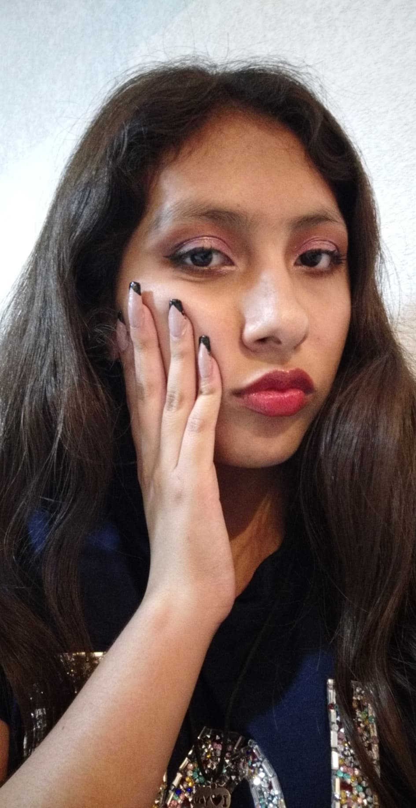
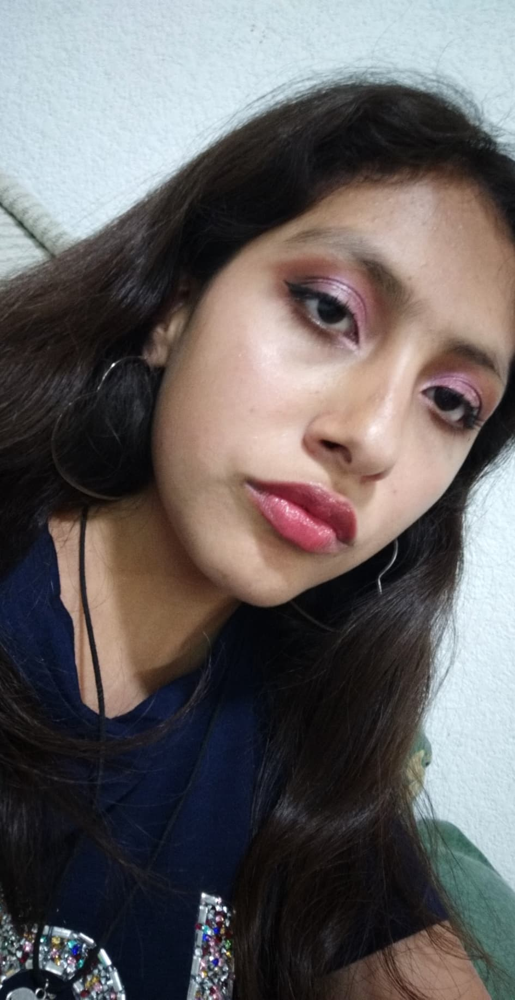

Me gusta mucho escuchar música

Amo cantar

Me gusta hacerme uñas postizas 
Me gusta maquillarme 
Todas esas cosas me hacen muy feliz y aunque haga solo una alegra mi día por completo.
Todas esas cosas me hacen muy feliz y aunque haga solo una alegra mi día por completo.